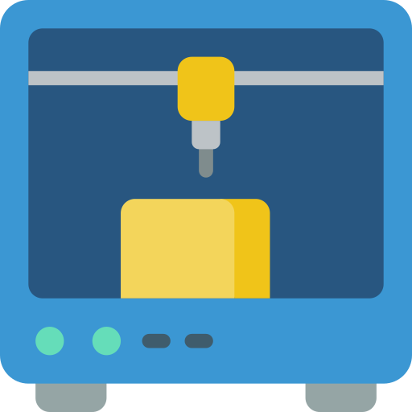

According to Forbes, by 2050, IoT technology will be in 95% of electronics for new product designs. And by 2050 it is expected to have everything connected to the cloud and to the internet. According to Business Insider, Space tourism could be feasible in 2050, but likely only for the very wealthy.
Developments in previously disjointed fields such as artificial intelligence and machine learning, robotics, nanotechnology, 3D printing and genetics and biotechnology are all building on and amplifying one another . . . On average, by 2020, more than a third of the desired core skill sets of most occupations will be comprised of skills that are not yet considered crucial to the job today.
Robotic and AI advances are eroding the need for humans to
venture into space. Nonetheless, I hope people will follow the
robots, though it will be as risk-seeking adventurers rather than
for practical goals.
The promise of regenerative medicine is developing more slowly
than I had hoped 18 years ago when I first coined the term. We
know there are substances in a fertilized egg that can turn back
the genetic clock. We know how to take newly created embryo like
cells and develop them into adult tissues. We are close to
producing cells that can restore muscle function to damaged hearts
and create neurons that can replace parts of the brain.
Artificial intelligence, or AI, and machine learning refer to the ability of machines to learn and act intelligently, meaning they can make decisions, carry out tasks, and even predict future outcomes based on what they learn from data. AI and machine learning already play a bigger role in everyday life than you might imagine. Alexa, Siri, Amazon's product recommendations, Netflix’s and Spotify’s personalized recommendations, every Google search you make, security checks for fraudulent credit card purchases, dating apps, fitness trackers... All are driven by AI.
Genomics is an interdisciplinary field of biology that focuses on the understanding and manipulation of DNA and genomes of living organisms. Gene editing is a group of technologies that enables genetic engineering in order to change the DNA and genetic structure of living organisms. Biotechnology is advancing to the point where it's viable to alter the DNA encoded within a cell; this will influence the characteristics or traits that its descendants will have. In plants, this could affect the number of leaves or their coloring, while in humans, it could affect their height, eye color, or their likelihood of developing diseases.
Human-computer interfaces create wearable devices and technology that help to improve the physical and potentially mental performance of humans and help us lead healthier and better lives. Perhaps the most prevalent examples of wearables today are fitness tracker bands and smartwatches: small, easy to wear devices that typically monitor our activity and provide insights that help us lead healthier, better, more productive lives.
Extended reality, or XR for short, encompasses virtual reality, augmented reality, and mixed reality and refers to the use of technology to create more immersive digital experiences. In practice, XR is being used to boost brand engagement, let customers try before they buy, enhance customer service, make workplace learning more effective, and improve other organizational processes. XR Technologies offer exciting and entirely new ways for people to experience the world around them.
3D printing, also known as additive manufacturing, means creating a 3D object from a digital file by building it layer by layer. 3D printing may seem distinctly more low-tech than artificial intelligence or gene editing, but it has the potential to completely transform manufacturing and other industries. Using 3D printing, the factories of the future could quickly print spare parts for machinery on site. Entire assembly lines could be replaced with 3D printers. We could print human tissue for transplant, print weapons, even print food.
Not new in the game but new in popularity. Biometric tech is here to see its biggest acceptance. A recent survey of security professionals revealed that 72 percent of companies are planning to drop traditional passwords by 2025. This will lead to a rise in fresh authorization services. It will include the face, eye, voice, hand, and signature identifications.